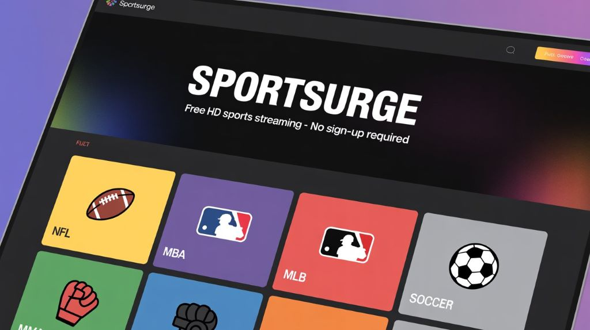

Sportsurge – Stream Live Sports NFL, NBA, MLB, NHL & Soccer in HD
Sportsurge is a well-known free sports streaming platform that gives fans instant access to live events from major leagues worldwide. Popular for its stable streams and sharp picture quality, the site serves every type of sports fan — whether you follow global football, American leagues like the NFL or NBA, or combat sports.
What is Sportsurge?
Sportsurge is an online hub that gathers and organizes live-stream links from various sports. It doesn’t host the streams itself but connects viewers to trusted third-party broadcasters where they can watch events in high-definition.

Sports Available on Sportsurge
- Football (Soccer): Premier League, Champions League, La Liga, and global tournaments.
- Basketball: HD streams of NBA, WNBA, and EuroLeague games.
- Baseball: MLB matches, playoffs, and highlights.
- American Football: NFL preseason, regular season, and postseason games.
- MMA & UFC: Live fight nights, PPVs, press events, and weigh-ins.
- Hockey: NHL games and international hockey competitions.
Device Compatibility
Sportsurge works smoothly on all major devices including smartphones, tablets, laptops, and smart TVs. It supports iOS, Android, Windows, macOS, and most modern web browsers.
Streaming Quality & Performance
Streams on Sportsurge typically load fast and play in HD with minimal buffering. The platform provides multiple backup links, ensuring reliable access even during peak traffic times.
How to Use Sportsurge (Step-by-Step)
- Search for the latest official Sportsurge domain in your browser.
- Choose the sport you want to watch — NFL, NBA, MLB, Soccer, and more.
- Select your game and open a preferred streaming source.
- Adjust video quality for the best viewing experience.
- If content is blocked, use a VPN to bypass regional restrictions.
Key Features of Sportsurge
- Completely Free: No fees, logins, or subscriptions.
- HD Streaming: Watch in 720p, 1080p, and sometimes higher.
- Live Information: Real-time schedules and match stats.
- Minimal Ads: A clean and simple interface.
- Community Chat: Engage with other fans while watching.
Why Sportsurge is Popular
- Always free to access with no time limits.
- Covers almost every major sport and league.
- Backup server options for uninterrupted viewing.
- Easy navigation and active fan communities.
Safety & Legal Notes
Although Sportsurge doesn’t host content, some streams may be region-restricted or fall under copyright rules depending on your country. For safer browsing, use a reliable VPN and ad blocker to avoid malicious mirrors or pop-up ads.
Best Alternatives to Sportsurge
- Stream2Watch: Wide sports library with global coverage.
- VIPBox: Simple layout and multiple stream categories.
- CrackStreams: Great for MMA, boxing, and big fights.
- Buffstreams: Smooth HD streams with minimal lag.
- Rojadirecta: Popular among soccer fans and European leagues.
User Reviews
“Sportsurge is my go-to for NFL and NBA streams — fast, reliable, and no lag.”
“Clean layout. I can find any live match within seconds.”
“Casting to my TV works perfectly. It’s great for family game nights.”
“Backup links save me every time a mirror goes down. Love it!”
Frequently Asked Questions (FAQs)
Is Sportsurge free?
Yes — the platform is completely free with no subscription or registration required.
Do I need an account?
No, you can start watching immediately.
Is Sportsurge legal?
The site only provides links, but the legality of streams varies by region. Users should follow local streaming laws.
Does Sportsurge work on mobile?
Yes, it is optimized for Android and iOS devices.
Why is Sportsurge not loading?
This may be due to geo-blocks, slow internet, or outdated domains. Try a VPN or check the latest official link.
Does the site have ads?
Sportsurge keeps ads minimal, but using an ad blocker can further improve the experience.
How do I get better stream quality?
Use a fast internet connection and close apps that consume bandwidth.
Are replays available?
Some third-party links offer replays and highlights depending on the event.
Is a VPN required?
Not required, but highly recommended for privacy and access to restricted content.
Does the domain change?
Yes, it can. Follow trusted sources or bookmark updated links.
Can I use Sportsurge on a Smart TV?
Yes — it works through casting devices like Fire Stick, Chromecast, and built-in browsers.
Do gaming consoles support it?
Yes, PlayStation and Xbox browsers can open Sportsurge easily.
What if Sportsurge is down?
Try alternatives like VIPBox, Stream2Watch, Buffstreams, or CrackStreams.
How can I report a broken stream?
Some versions of Sportsurge include feedback options where users can report inactive links.
Conclusion
Sportsurge remains a top choice for sports fans who want free, high-quality, and reliable streams from leagues around the world. With broad sports coverage, smooth performance, and support for all devices, it ensures fans never miss their favorite matches — whether it’s football, basketball, MMA, or hockey.